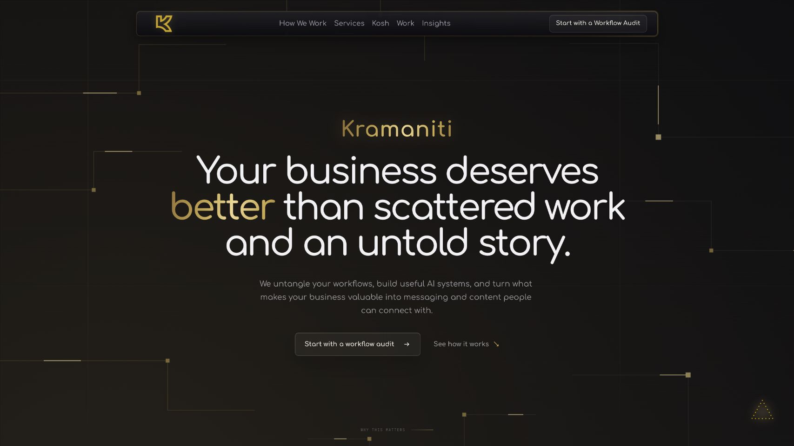
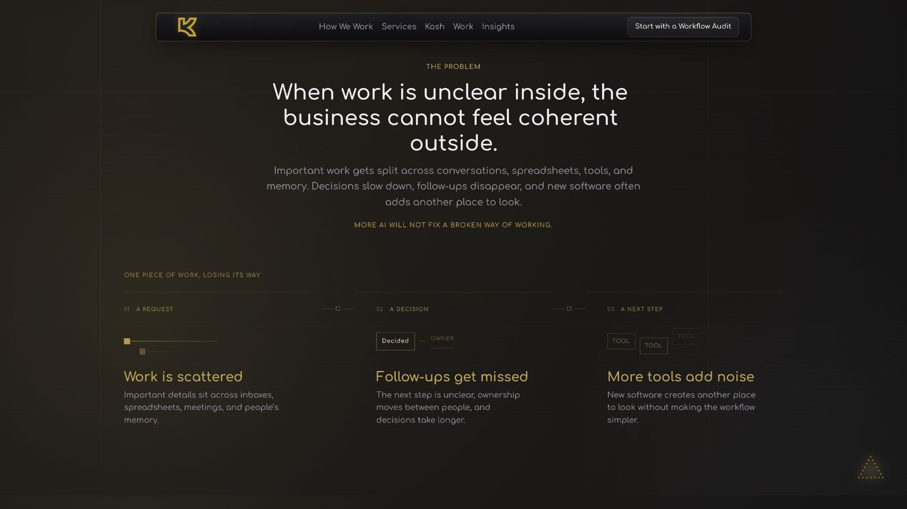
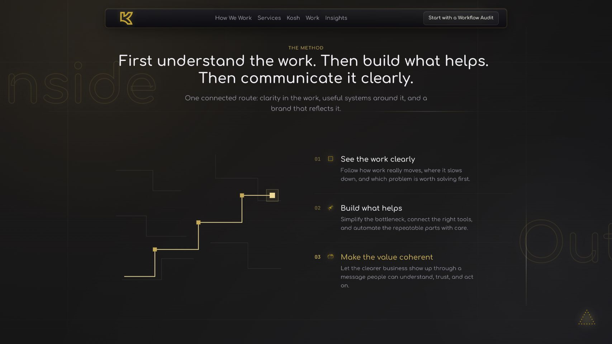

01 / Full case study
Kramaniti
made legible.
A business website for a connected strategy, workflow, practical AI, and communication practice.

The problem
How do you explain a connected practice without turning it into a list of services?
The experience needed to help a visitor recognise the problem first, understand the method second, and find a credible starting point third. The structure became problem → method → proof → workflow audit.
The design uses generous typography, connected diagrams, and a restrained dark-and-gold system so the site feels like a coherent argument rather than a catalogue.
The sequence
One clear path
through the practice.

The problem becomes specific before the method is introduced.

Three connected movements make an abstract practice easier to follow.
What this demonstrates
Design, structure, and implementation
working as one explanation.
My contribution crossed information architecture, content structure, visual direction, UI/UX, and frontend implementation. Business outcomes are not claimed here; the evidence is the public interface and its underlying narrative logic.